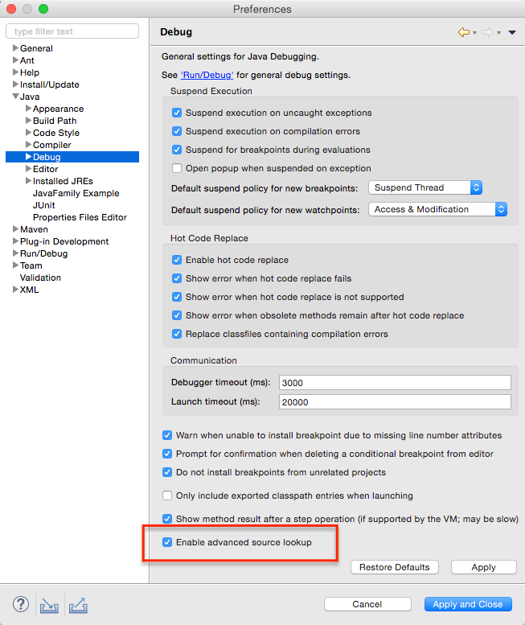

Regarding usage of newer DirectoryDialog on Windows:
In the old DirectoryDialog, we used to have the option to set a text message to specify the purpose of the DirectoryDialog using DirectoryDialog#setMessage(String).
This functionality is no more possible with the newer DirectoryDialog.
Hence, revisit the usage of DirectoryDialog.setMessage(String) in your projects, and if needed elaborate the Title field of DirectoryDialog using DirectoryDialog.setText(String) method.
Note: Recommend to use a minimal set of words in the Title field of DirectoryDialog and avoid making it look clumsy.

As a typical error markers, those are reported as decorator in the Project Explorer and as an entry in the Problems view.

Clients can associate marker resolution factories to these markers, whose type id is org.eclipse.core.resources.unknownNature.


The buttons are not available by default. They can be added via Window > Perspective > Customize Perspective...:


- The Eclipse compiler for Java (ECJ) implements all the new Java 9 language enhancements
- Updated significant features to support Java Modules, such as compiler, search and many editor features.
Note: It is not mandatory to run Eclipse with Java Runtime 9 to get the Java 9 support. However, a Java runtime 9 is required to be on a project's build path to compile a modular project against the system modules.
-
When a Java Runtime 9 is added to a project's build path, the system modules are listed under the System library in the package explorer:

-
An existing non-modular Java project can be quickly converted to a module by creating a module-info.java for that project. This feature can be availed once the project has been moved to compliance 9:

-
With Java 9 support, a library or a container can now be added to the module path as opposed to the classpath:

-
Once an entry has been added to a project's module path, its contents and encapsulation properties can further be modified by double-clicking on the Is modular node (or using the Edit button while Is modular is selected):
-
On the Contents tab individual modules inside a container like JRE System Library
can be included or excluded by moving the module from left-to-right or vice versa.
Modules shown in the lower right box are implicitly included, because they are required
by one or more modules in the upper right box.

-
On the Details tab the encapsulation of given modules can be further influenced.
The following example shows how module
module.onecan be made to export one of its packages to the module of the current Java project:
- Toggling Defines one or more modules (see above screenshot) lets you specify whether a given regular (non-modular) jar file or project should be considered as an "automatic module". As a consequence of changes here, the entry will move to the Modulepath or Classpath accordingly.
-
On the Contents tab individual modules inside a container like JRE System Library
can be included or excluded by moving the module from left-to-right or vice versa.
Modules shown in the lower right box are implicitly included, because they are required
by one or more modules in the upper right box.
-
Java search now includes a new search scope - Module:

-
When a Java Runtime 9 is added to a project's build path, the launch configurations are created with "Dependencies" tab and not the old "Classpath" tab.
User can change the JRE of launch configuration and on the confirmation, the tab changes from "Classpath" to "Dependencies" or vice versa.

If Java project is modular and module is described in module_info.java, most of the dependencies will be defined in the Modular Entries.

If Java project is not modular, most of the dependencies will be defined in the Classpath Entries.

-
A new quick fix is offered on import statements to fix issues that are reported due to missing module dependency
This QuickFix is applicable if the project is a Java9 project and has a
module-info.java.The quick fix can be invoked from the editor:

Before the quickFix is applied the module-info file looks as below

After the quickfix is invoked,
module-info.javawill be updated to includerequires 'MODULE_NAME'
-
A new quick fix is available when you have an unresolved type in a Java file. If the unresolved type can be found in a java9 module, a quick fix will be available to add an import type entry to your file reporting the error and add the required module dependency to
module-info.javafile.This QuickFix is applicable if the project is a Java9 project and has a
module-info.javafile.The quick fix can be invoked from the editor:

Before the quickFix is applied, the module-info file looks as below
After the quickfix is invoked,
module-info.javawill be updated to includerequires 'MODULE_NAME'After the quickFix is applied, the required
importstatement is added to the file reporting error
-
A new quick fix is available when you have an unresolved type on
service providerin a provides directive in module-info.java file. If the unresolved type can not be found in the current module, a quick fix will be available to create a new class or an interface in the current module.This QuickFix is applicable if the project is a Java9 project and has a
module-info.javafile.The quick fix can be invoked from the editor:


When the service is a class, the quick fix is proposed for creating a class.
When the service is an interface or an annotation, two quick fixes are proposed for creating a class or an interface.

TestReporter entries displayed in Console viewTestReporter can be used to publish additional data about the current test run which can be viewed in the Console view:


@NonNullByDefault to packagesIf the package already has a package-info.java, the quick fix can be invoked from the editor:

Otherwise, the quickfix must be invoked from the problems view, and will create a package-info.java with the required annotation:

When invoked from the problems view, both variations of the quick fix can fix the problem for multiple packages simultaneously.


org.eclipse.jdt.launching.workspaceProjectDescribers extension point can be used to enable advanced source lookup for projects with non-default layout, like PDE Plug-In projects.
New org.eclipse.jdt.launching.sourceContainerResolvers can be used to download sources jar files from remote artifact repositories, like Maven Central or Eclipse P2.
Advanced source lookup affects debug launches only and can be enabled or disabled with Java > Debug > Enable advanced source lookup preference option:



META-INF/MANIFEST.MF or a feature.xml) and configure them accordingly.
Note that folders already configured as Eclipse projects (already containing a .project file) will be imported "as it" and won't be reconfigured by PDE.
org.eclipse.jface.util.Throttler can now be used to limit the rate updates on the UI thread
with a specified time while executing the task wrapped in a Runnable.
An example for a use case are updates to a progress monitor, like in EGit's Import Project wizard. This wizard scans a directory
and report any found file to the progress (actually a org.eclipse.jface.wizard.ProgressMonitorPart). This happens
so fast that it can't be read, but overall it degrades the wizard's performance.
public class ProgressMonitorPart extends Composite implements
IProgressMonitorWithBlocking {
[...]
private Throttler throttledUpdate;
[...]
throttledUpdate = new Throttler(fLabel.getDisplay(), Duration.ofMillis(100), this::updateLabel);
[...]
protected void queueUpdateLabel() {
throttledUpdate.throttledExec();
}
ITextSelection
can be adapted to an IVariable. So in order to take advantage of debug details on Hover in the Generic
Editor, you can simply use the org.eclipse.core.runtime.adpaters extension point and define an IAdapterFactory
from ITextSelection to IVariable to enable this feature.
If the current selection cannot be adapted (all adapter factories return null), the contribution to Generic Editor is ignored.
The JDT project already contributes such an adapter.